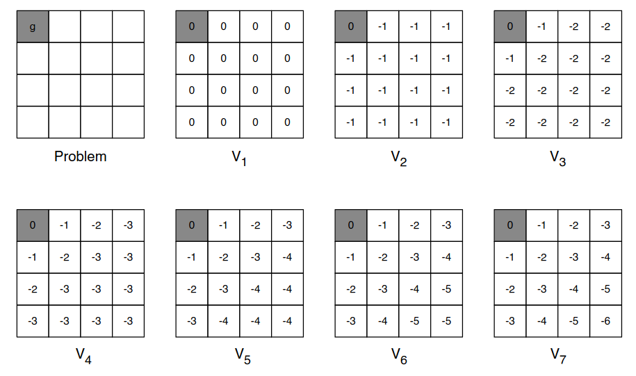

Introduction to Reinforcement Learning
3 - Planning by Dynamic Programming
Value Iteration
Just to refresh the basic principle of dynamic programming (DP) which is the
principle of optimality. Any optimal policy can be subdivided into two components:
- An optimal first action A*...
- ...Followed by an optimal policy from successor state S'.
Following an optimal course simply means performing the optimal action from any given state.
This is formalized in the following Theorem.
Theorem (Principle of Optimality)
A policy π(a|s) achieves the optimal value from state s, $v_\pi(s) = v_*(s)$ iff
For any state s' reachable from s: π achieves the optimal value from state s':
$v_\pi(s') = v_*(s')$.
More informally: a policy is optimal only if for each state me might end up in,
the policy would behave optimally from that state onwards. And this is a requirement for
optimality.
We will use this to build a value iteration algorithm. Think of the value function as a caching
our solutions to all of our subproblems. When we end up in some state, we simply assume we
know the optimal solution (like if someone had told us what v
*(s') was.)
If we know the solution to subproblems v
*(s'), then the solution
v
*(s) can be found by one-step lookahead:
$$
v_*(s)\leftarrow \max_{a\in\mc{A}}\mc{R}_s^a + \gamma\sum_{s'\in\mc{S}}\mc{P}_{ss'}^a v_*(s')
$$
We assume we know the optimal value in the "leaves", and then collect all information and put it
in the "root node". The idea of value iteration, is to apply these updates iteratively.
We start with some random values, and then find better values through iteration.
Intuitively: we start at the end of the problem with the final rewards, and work our way
backwards. We start at the end and work our way backwards until we have discovered the optimal
path; so we loop over our entire state space. (Still works with loopy, stochstic MDPs).
Simple example, with another grid world where we want to solve a shortest path problem to
the colored cell and we can only move {n, e, s, w} and -1 reward per step.

We initialize with 0s. After second iteration we have mapped -1s and so forth. The values
propogate through, and we are able to find the optimal value function in every cell.
Now, a more general view of value iteration. The problem is that we want to find an optimal
policy π of some MDP. And we are not solving the full RL problem, because we are being told
what the dynamics of the system is, how the environment works, and we are being told what the
rewards are. So we are just solving the planning. We looked at policy iteration - and value
iteration is just another mechanism of solving it.
So to find the optimal policy with value iteration, is with an iterative application of
Bellman optimality backup. Earlier we used the expectation variant to evaluate a specific policy,
but now we find the optimal value function:
$$
v_1 \rightarrow v_2 \rightarrow \ldots \rightarrow v_*
$$
We use synchronous backups:
At each iteration k+1, for all states s∈𝓢, we update v
k+1(s) from v
k(s').
Convergence will be proven later with contraction mapping. Now, unlike policy iteration, we are
not building a policy in every iteration: there is no explicit policy. Intermediate value
functions may not correspond to any policy, but the end result will correspond to the optimal
policy. Going back to the policy iteration example: there we calculated the values, then we
made a greedy policy. In value iteration, we don't make the policy, but just work on the numbers.
Summary of DP algorithms:
$$
\begin{array}{|l|l|l|}
\hline
\textbf{Problem} & \textbf{Bellman Equation} & \textbf{Algorithm} \\
\hline
\text{Prediction} & \text{Bellman Expectation Equation} & \text{Iterative Policy Evaluation} \\
\hline
\text{Control} & \text{Bellman Exp. Equation + Greedy Policy Impr.} & \text{Policy Evaluation} \\
\hline
\text{Control} & \text{Bellman Optimality Equation} & \text{Value Iteration} \\
\hline
\end{array}
$$
There are different problems we want to solve - and all of them are planning problems.
The MDP is given and we want to solve it. There are two types: prediction and control. For
prediction we want calculate how much reward we get for som given policy. We use the
Bellman expectation equation which is turned into an iterative policy evaluation.
In control (two different ways), which is how to find the total reward, or optimal policy.
Now we use the Bellman expectation equation with a greedy policy improvement, or a
Bellman optimality equation.
All these algorithms are based on state-value functions, $v_\pi(s)$ or $v_*(s)$. Complexity is
O(mn
2) per iteration for m actions and n states. This could also apply to
action-value functions $q_\pi(s,a)$ or $q_*(s,a)$, for which the complexity would be
O(m
2n
2).
Extensions to Dynamic Programming
Perhaps later...
Contraction Mapping
Perhaps later...